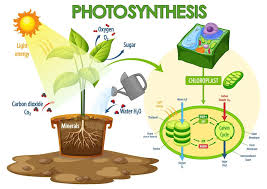
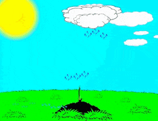

Reaksi Kimia: CO2 + H2O --> C6H12O6 + O2
Fotosintesis adalah proses di mana tumbuhan dan beberapa organisme lain mengubah cahaya matahari menjadi energi kimia. Selama fotosintesis, energi dari cahaya matahari digunakan untuk mengubah karbon dioksida dan air menjadi glukosa, yang merupakan bentuk gula yang memberikan energi dan bahan baku untuk pertumbuhan tumbuhan. Selain itu, oksigen dihasilkan sebagai produk sampingan dan dilepaskan ke udara. Proses ini terjadi di dalam sel tumbuhan, khususnya di bagian yang disebut kloroplas.
 